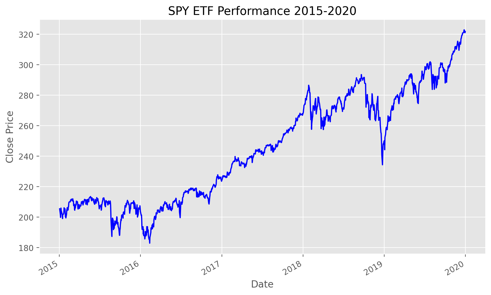

Getting and charting data with Matplotlib
Thanks for popping by; please note that this article is still in construction.
Introduction
Welcome to the second episode of our Python and Quantitative Finance tutorial, where we will enter in our real Python journey.
In this first coding exercise, things will be very simple, we will essentially look at the past performance of a financial tool, an ETF. This ETF is called the SPY, it’s a US domiciled ETF that aims to replicate the performance of the S&P 500 Index1, one of the key indices to measure the performance of the US Equity market.
Import Libraries
First, we import necessary libraries. yfinance will fetch the data, and matplotlib will help us chart it.
Download SPY Data
Fetching historical data for the SPY ETF is straightforward with yfinance. We’ll grab the last five years of daily data.
It’s easy to show the results of this request with the code below, using the function tail(n) that essentially gathers the last n row of the spy_data dataframe that has been generated by the download function of the the yfinance library.
| Open | High | Low | Close | Adj Close | Volume | |
|---|---|---|---|---|---|---|
| Date | ||||||
| 2019-12-24 | 321.470001 | 321.519989 | 320.899994 | 321.230011 | 299.739136 | 20270000 |
| 2019-12-26 | 321.649994 | 322.950012 | 321.640015 | 322.940002 | 301.334778 | 30911200 |
| 2019-12-27 | 323.739990 | 323.799988 | 322.279999 | 322.859985 | 301.260040 | 42528800 |
| 2019-12-30 | 322.950012 | 323.100006 | 320.549988 | 321.079987 | 299.599182 | 49729100 |
| 2019-12-31 | 320.529999 | 322.130005 | 320.149994 | 321.859985 | 300.326935 | 57077300 |
The function tail comes out of the pandas library, which is probably the most powerful library 2 I have seen in the last 2 decades!
Going through the details of this library is well beyond the scope of this article but will we will discover step by step of its most useful functions.
Plotting the Data
With our data in hand, let’s plot the closing prices. Here, the choice of a green and blue stylesheet makes our chart not only informative but visually appealing.
Code

Why This Matters
This exercise is a primer in the practical application of Python for financial analysis. By fetching real-world data and visualizing it, we gain insights into market trends and ETF performance over time. This skill is fundamental in quantitative finance, where data-driven decisions are paramount.
Recap and Further Reading
Today, we’ve covered how to set up your Python environment, fetch financial data using yfinance, and visualize it with matplotlib. These steps are building blocks in your journey into quantitative finance and data analysis.
For those keen to delve deeper, consider exploring the following resources:
- Books: “Python for Finance” by Yves Hilpisch, “Quantitative Finance For Dummies” by Steve Bell.
- Websites: Quantopian, QuantConnect, and the matplotlib documentation.
- GitHub Repositories: matplotlib/matplotlib, ranaroussi/yfinance.
Stay curious, and happy coding!
Footnotes
For more information on the S&P 500 Index, you can look at this Wikipedia article.↩︎
For more information on the
pandaslibrary, look at its reference website.↩︎